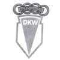
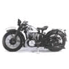
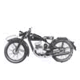
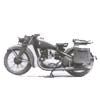

1929 |
S-a ajuns la o cota impresionanta, fabricarea a 60 000 de motociclete pe an. In sport la categoria 175 cmc si 250 cmc domina motocicletele DKW, iar in categoria 500 cmc concureaza cu BMW. |
||
1930 |
Criza economica care predomina la vremea respectiva in lume a lovit si concernul DKW. Fabricatia motocicletelor scade, dar gama larga de domenii de activitate a concernului inlatura pierderile foarte mari. Numarul muncitorilor scade la 850. |
||
1931 |
La expozitia de automobile din Berlin se prezinta modele noi de automobile de clasa mica, la preturi accesibile. |
||
1932 |
In 1 ianuarie se naste gruparea Auto Union, ai caror membrii sunt firme ca Audi, Horch, Wanderer si DKW. |
 | |
1933 |
Cresterea profitului duce la angajarea de noi muncitori. |
||
1934 |
Stramosul concernului DKW este dat afara din gruparea Auto Union fara motiv. |
||
1935 |
O inovatie unica: modelele de 200 cmc si 500 cmc sunt produse cu aprindere electrica. |
||
1936 |
La fel ca Primul Razboi Mondial, si cel de al doilea obliga fabricile din Germania sa produca echipamente de razboi. In acest moment DKW detine o cota de piata de 34,6%. Cauzele: pretul scazut si costuri mici de intretinere. 5000 de distribuitori vand motociclete DKW in toata lumea, cu o cota de piata de 36%. |
 | |
1937 |
Din cauza regimului socialist productia motocicletelor DKW scade. |
||
1938 |
Modelul MZ 350 este conceput pentru razboi si fabricat in numar mare pentru armata. |
||
1939 |
Productia asa-ziselor ”motociclete de lux” inceteaza. Se fabrica a 500 000-a motocicleta. Modelul RT 125 este considerat ca un fel de model pentru alte tipuri de motociclete. |
 | |
1940 |
Productia celui mai bine vandut model, RT 100, inceteaza pentru a lasa loc modelelor RT 125 si MZ 350. Se produc piese pentru motoare de avion. |
||
1941 |
Productia modelului RT 125 inceteaza. MZ 350 se fabrica pentru armata. |
 | |
1942 |
Numarul motocicletelor care ies din fabrica scade, dar creste numarul pieselor pentru motoarele de avion. |
||